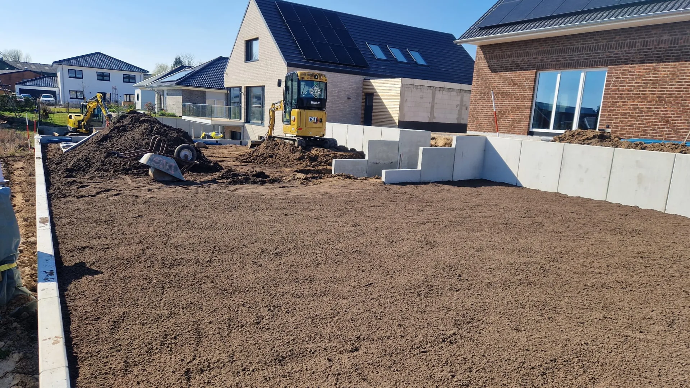
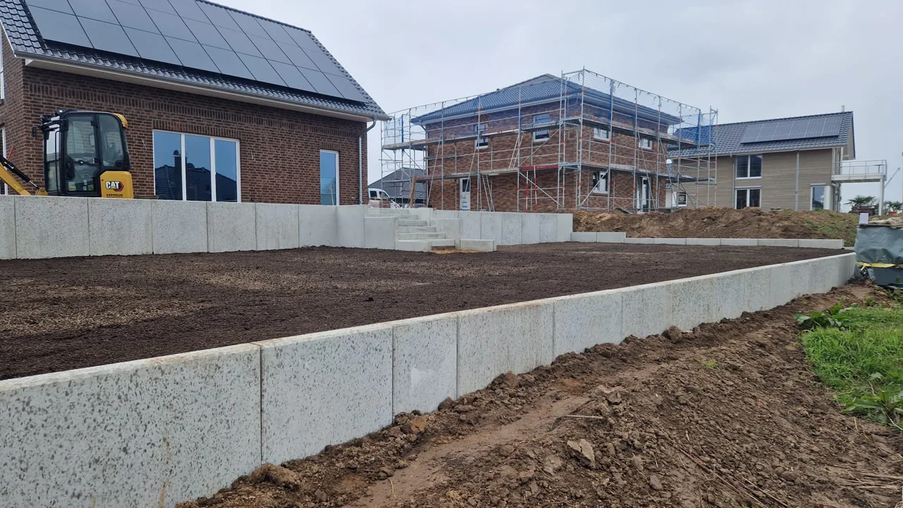
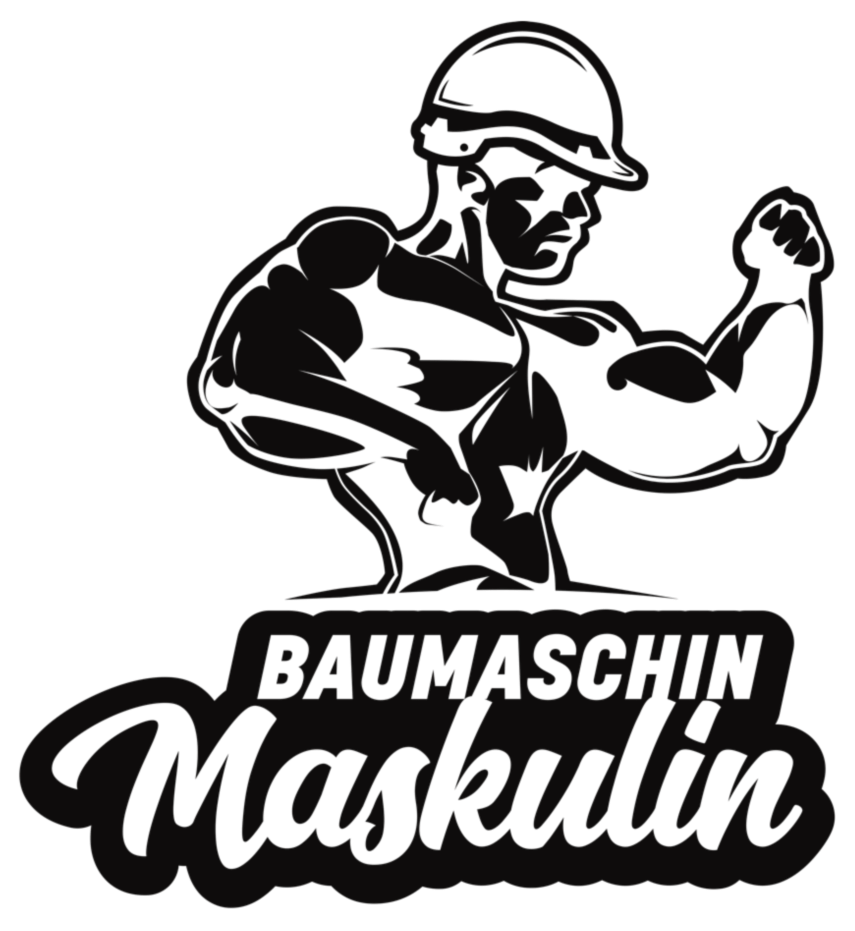
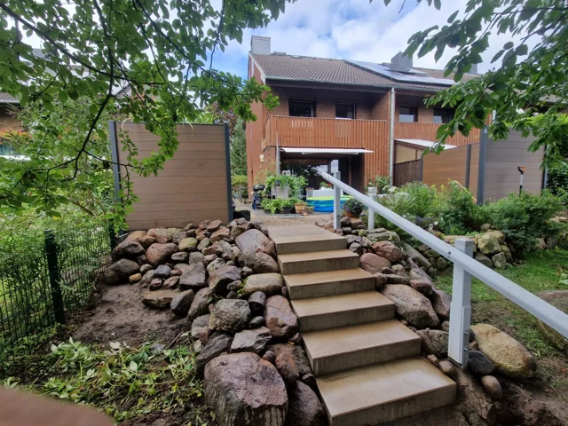
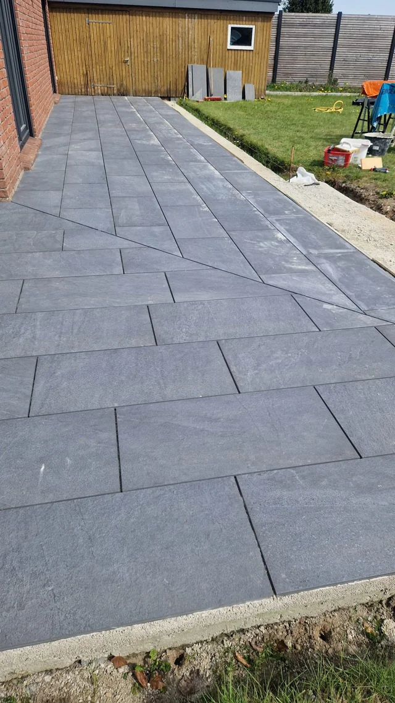
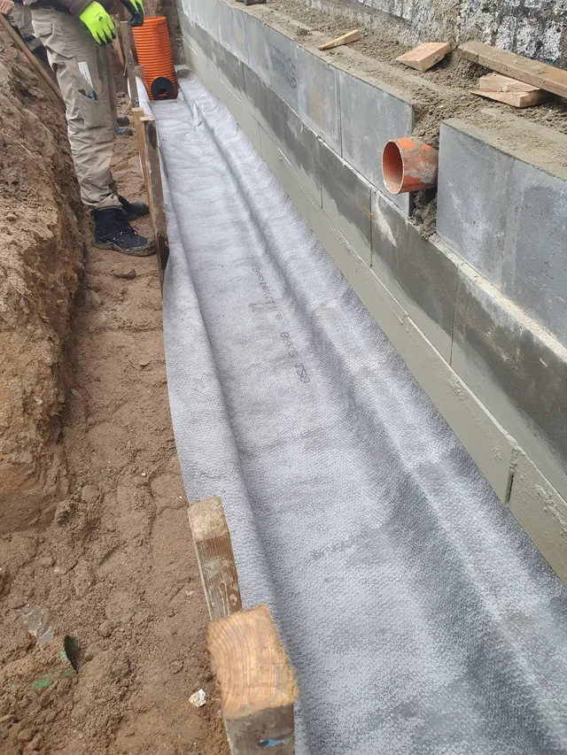

Wir hören zu.
Sie erzählen uns von Ihrem Vorhaben. Gemeinsam besprechen wir Wünsche und Rahmenbedingungen.
AUS GROSSHARRIE. FÜR SCHLESWIG-HOLSTEIN.
Von der Planung bis zur
perfekten Umsetzung.
Ihr erfahrenes Team aus ausgebildeten Straßen- und Tiefbauern für Tiefbau, Erdarbeiten, Pflasterarbeiten, Zaun- & Torbau und Gartengestaltung in Schleswig-Holstein.
Jetzt kostenloses Erstgespräch vereinbaren ↗
Echte Einblicke in unsere ArbeitHUMOR HABEN WIR. HANDWERK KÖNNEN WIR.
Und für das, was sich oben sehen lassen kann.
Unsere Leistungen entdecken ↓ACHT LEISTUNGEN. EIN STARKES TEAM.
Vom ersten Gespräch bis zur Ausführung: Entdecken Sie unsere Leistungen und passende Einblicke von der Baustelle.
Was unter der Oberfläche liegt, braucht eine solide Grundlage: Gräben, Leitungswege und Arbeiten am Gebäude.
Leistung entdeckenAushub, Bodenbewegung und Geländemodellierung – wir schaffen Platz für das, was Sie vorhaben.
Leistung entdeckenSchutz für erdberührte Gebäudeteile: Wir kümmern uns um die Arbeiten an Ihrer Kellerwand.
Leistung entdeckenZugänge, Einfriedungen und Sichtschutz – abgestimmt auf Ihr Grundstück und Ihre Wünsche.
Leistung entdeckenPlatz für Neues schaffen: abgestimmter Rückbau als Teil Ihres Bauvorhabens.
Leistung entdeckenWege, Höfe und Zufahrten, die zum Gebäude passen und sich im Alltag bewähren.
Leistung entdeckenFundamente, Betonflächen und Bauteile als solide Basis für Ihr Projekt.
Leistung entdeckenZuhören, gemeinsam durchdenken und die passenden Leistungen für Ihr Vorhaben abstimmen.
Leistung entdecken
DAS TEAM HINTER IHREM PROJEKT
Wir sind die DvG Baugesellschaft mbH & Co. KG aus Großharrie – ein starkes Team aus ausgebildeten Straßen- und Tiefbauern im Bauhauptgewerbe unter der Leitung von Geschäftsführer Dennis von Gradolewski.
Ob kleine Vorhaben oder Großprojekte: Von der ersten Beratung über die genaue Planung bis hin zur fachgerechten Umsetzung begleiten wir Sie Schritt für Schritt im gesamten Raum Schleswig-Holstein.

Starkes Team.
Trockener Humor.
Die Zufriedenheit unserer Kunden steht für uns an allererster Stelle.
EINBLICKE VON DER BAUSTELLE
Ein Blick auf unterschiedliche Arbeitsschritte und Ergebnisse. Ausgewählte Einblicke in Erdarbeiten, Pflasterflächen und den Schutz von Gebäuden.




GEMEINSAM ZUM ERGEBNIS
Sie erzählen uns von Ihrem Vorhaben. Gemeinsam besprechen wir Wünsche und Rahmenbedingungen.
Wir planen die passenden Leistungen und stimmen die nächsten Schritte mit Ihnen ab.
Unser Team setzt Ihr Bauvorhaben fachgerecht um und begleitet Sie bis zum Ergebnis.
IHR PROJEKT BEGINNT MIT EINEM GESPRÄCH
Vereinbaren Sie ein kostenloses Erstgespräch. Wir freuen uns auf Ihr Bauvorhaben in Schleswig-Holstein.
Geschäftsführer: Dennis von Gradolewski
Kleinharrier Straße 3
24625 Großharrie
Montag – Donnerstag: 07:00 – 16:00 Uhr
Freitag: 07:00 – 12:00 Uhr
ERZÄHLEN SIE UNS VON IHREM VORHABEN